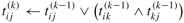

|
|
< Day Day Up > |
|
In this section, we shall use a different dynamic-programming formulation to solve the all-pairs shortest-paths problem on a directed graph G = (V, E). The resulting algorithm, known as the Floyd-Warshall algorithm, runs in Θ(V3) time. As before, negative-weight edges may be present, but we assume that there are no negative-weight cycles. As in Section 25.1, we shall follow the dynamic-programming process to develop the algorithm. After studying the resulting algorithm, we shall present a similar method for finding the transitive closure of a directed graph.
In the Floyd-Warshall algorithm, we use a different characterization of the structure of a shortest path than we used in the matrix-multiplication-based all-pairs algorithms. The algorithm considers the "intermediate" vertices of a shortest path, where an intermediate vertex of a simple path p = 〈v1, v2,..., vl〉 is any vertex of p other than v1 or vl, that is, any vertex in the set {v2, v3,..., vl-1}.
The Floyd-Warshall algorithm is based on the following observation. Under our assumption that the vertices of G are V = {1, 2,..., n}, let us consider a subset {1, 2,..., k} of vertices for some k. For any pair of vertices i, j ∈ V, consider all paths from i to j whose intermediate vertices are all drawn from {1, 2,..., k}, and let p be a minimum-weight path from among them. (Path p is simple.) The Floyd-Warshall algorithm exploits a relationship between path p and shortest paths from i to j with all intermediate vertices in the set {1, 2,..., k - 1}. The relationship depends on whether or not k is an intermediate vertex of path p.
If k is not an intermediate vertex of path p, then all intermediate vertices of path p are in the set {1, 2,..., k - 1}. Thus, a shortest path from vertex i to vertex j with all intermediate vertices in the set {1, 2,..., k - 1} is also a shortest path from i to j with all intermediate vertices in the set {1, 2,..., k}.
If k is an intermediate vertex of path p, then we break p down into as shown in Figure 25.3. By Lemma 24.1, p1 is a shortest path from i to k with all intermediate vertices in the set {1, 2,..., k}. Because vertex k is not an intermediate vertex of path p1, we see that p1 is a shortest path from i to k with all intermediate vertices in the set {1, 2,..., k - 1}. Similarly, p2 is a shortest path from vertex k to vertex j with all intermediate vertices in the set {1, 2,..., k - 1}.
Figure 25.3: Path p is a shortest path from vertex i to vertex j, and k is the highest-numbered intermediate vertex of p. Path p1, the portion of path p from vertex i to vertex k, has all intermediate vertices in the set {1, 2,..., k - 1}. The same holds for path p2 from vertex k to vertex j.
Based on the above observations, we define a recursive formulation of shortest-path estimates that is different from the one in Section 25.1. Let be the weight of a shortest path from vertex i to vertex j for which all intermediate vertices are in the set {1, 2,..., k}. When k = 0, a path from vertex i to vertex j with no intermediate vertex numbered higher than 0 has no intermediate vertices at all. Such a path has at most one edge, and hence . A recursive definition following the above discussion is given by
Because for any path, all intermediate vertices are in the set {1, 2,..., n}, the matrix gives the final answer: for all i, j ∈ V.
Based on recurrence (25.5), the following bottom-up procedure can be used to compute the values in order of increasing values of k. Its input is an n × n matrix W defined as in equation (25.1). The procedure returns the matrix D(n) of shortest-path weights.
FLOYD-WARSHALL(W) 1 n ← rows[W] 2 D(0) ← W 3 for k ← 1 to n 4 do for i ← 1 to n 5 do for j ← 1 to n 6 do 7 return D(n)
Figure 25.4 shows the matrices D(k) computed by the Floyd-Warshall algorithm for the graph in Figure 25.1.
The running time of the Floyd-Warshall algorithm is determined by the triply nested for loops of lines 3-6. Because each execution of line 6 takes O(1) time, the algorithm runs in time Θ(n3). As in the final algorithm in Section 25.1, the code is tight, with no elaborate data structures, and so the constant hidden in the Θ-notation is small. Thus, the Floyd-Warshall algorithm is quite practical for even moderate-sized input graphs.
There are a variety of different methods for constructing shortest paths in the Floyd-Warshall algorithm. One way is to compute the matrix D of shortest-path weights and then construct the predecessor matrix Π from the D matrix. This method can be implemented to run in O(n3) time (Exercise 25.1-6). Given the predecessor matrix Π, the PRINT-ALL-PAIRS-SHORTEST-PATH procedure can be used to print the vertices on a given shortest path.
We can compute the predecessor matrix Π "on-line" just as the Floyd-Warshall algorithm computes the matrices D(k). Specifically, we compute a sequence of matrices Π(0), Π(1),..., Π(n), where Π = Π(n) and is defined to be the predecessor of vertex j on a shortest path from vertex i with all intermediate vertices in the set {1, 2,..., k}.
We can give a recursive formulation of  . When k = 0, a shortest path from i to j has no intermediate vertices at all. Thus,
. When k = 0, a shortest path from i to j has no intermediate vertices at all. Thus,
For k ≥ 1, if we take the path , where k ≠ j, then the predecessor of j we choose is the same as the predecessor of j we chose on a shortest path from k with all intermediate vertices in the set {1, 2,...,k - 1}. Otherwise, we choose the same predecessor of j that we chose on a shortest path from i with all intermediate vertices in the set {1, 2,..., k - 1}. Formally, for k ≥ 1,
We leave the incorporation of the Π(k) matrix computations into the FLOYD-WARSHALL procedure as Exercise 25.2-3. Figure 25.4 shows the sequence of Π(k) matrices that the resulting algorithm computes for the graph of Figure 25.1.The exercise also asks for the more difficult task of proving that the predecessor subgraph Gπ,i is a shortest-paths tree with root i. Yet another way to reconstruct shortest paths is given as Exercise 25.2-7.
Given a directed graph G = (V, E) with vertex set V = {1, 2,...,n}, we may wish to find out whether there is a path in G from i to j for all vertex pairs i, j ∈ V. The transitive closure of G is defined as the graph G* = (V, E*), where E*= {(i, j) : there is a path from vertex i to vertex j in G}.
One way to compute the transitive closure of a graph in Θ(n3) time is to assign a weight of 1 to each edge of E and run the Floyd-Warshall algorithm. If there is a path from vertex i to vertex j, we get dij < n. Otherwise, we get dij = ∞.
There is another, similar way to compute the transitive closure of G in Θ(n3) time that can save time and space in practice. This method involves substitution of the logical operations ∨ (logical OR) and ∧ (logical AND) for the arithmetic operations min and + in the Floyd-Warshall algorithm. For i, j, k = 1, 2,...,n, we define to be 1 if there exists a path in graph G from vertex i to vertex j with all intermediate vertices in the set {1, 2,..., k}, and 0 otherwise. We construct the transitive closure G* = (V, E*) by putting edge (i, j) into E* if and only if . A recursive definition of , analogous to recurrence (25.5), is
and for k ≥ 1,
| (25.8) |
As in the Floyd-Warshall algorithm, we compute the matrices in order of increasing k.
TRANSITIVE-CLOSURE(G) 1 n ← |V[G]| 2 for i ← 1 to n 3 do for j ← 1 to n 4 do if i = j or (i, j) ∈ E[G] 5 then 6 else 7 for k ← 1 to n 8 do for i ← 1 to n 9 do for j ← 1 to n 10 do  11 return T(n)
Figure 25.5 shows the matrices T(k) computed by the TRANSITIVE-CLOSURE procedure on a sample graph. The TRANSITIVE-CLOSURE procedure, like the Floyd-Warshall algorithm, runs in Θ(n3) time. On some computers, though, logical operations on single-bit values execute faster than arithmetic operations on integer words of data. Moreover, because the direct transitive-closure algorithm uses only boolean values rather than integer values, its space requirement is less than the Floyd-Warshall algorithm's by a factor corresponding to the size of a word of computer storage.
Run the Floyd-Warshall algorithm on the weighted, directed graph of Figure 25.2. Show the matrix D(k) that results for each iteration of the outer loop.
Modify the FLOYD-WARSHALL procedure to include computation of the Π(k) matrices according to equations (25.6) and (25.7). Prove rigorously that for all i ∈ V , the predecessor subgraph Gπ,i is a shortest-paths tree with root i. (Hint: To show that Gπ,i is acyclic, first show that implies , according to the definition of . Then, adapt the proof of Lemma 24.16.)
As it appears above, the Floyd-Warshall algorithm requires Θ(n3) space, since we compute for i, j, k = 1, 2,...,n. Show that the following procedure, which simply drops all the superscripts, is correct, and thus only Θ(n2) space is required.
FLOYD-WARSHALL′ (W) 1 n ← rows[W] 2 D ← W 3 for k ← 1 to n 4 do for i ← 1 to n 5 do for j ← 1 to n 6 do dij ← min (dij, dik + dkj) 7 return D
Suppose that we modify the way in which equality is handled in equation (25.7):
Is this alternative definition of the predecessor matrix Π correct?
How can the output of the Floyd-Warshall algorithm be used to detect the presence of a negative-weight cycle?
Another way to reconstruct shortest paths in the Floyd-Warshall algorithm uses values for i, j, k = 1, 2,..., n, where is the highest-numbered intermediate vertex of a shortest path from i to j in which all intermediate vertices are in the set {1, 2,..., k}. Give a recursive formulation for  , modify the FLOYD-WARSHALL procedure to compute the values, and rewrite the PRINT-ALL-PAIRS-SHORTEST-PATH procedure to take the matrix as an input. How is the matrix Θ like the s table in the matrix-chain multiplication problem of Section 15.2?
, modify the FLOYD-WARSHALL procedure to compute the values, and rewrite the PRINT-ALL-PAIRS-SHORTEST-PATH procedure to take the matrix as an input. How is the matrix Θ like the s table in the matrix-chain multiplication problem of Section 15.2?
Give an O(V E)-time algorithm for computing the transitive closure of a directed graph G = (V, E).
Suppose that the transitive closure of a directed acyclic graph can be computed in f(|V|,|E|) time, where f is a monotonically increasing function of |V| and |E|. Show that the time to compute the transitive closure G* = (V, E*) of a general directed graph G = (V, E) is f(|V|,|E|) + O(V + E*).
|
|
< Day Day Up > |
|